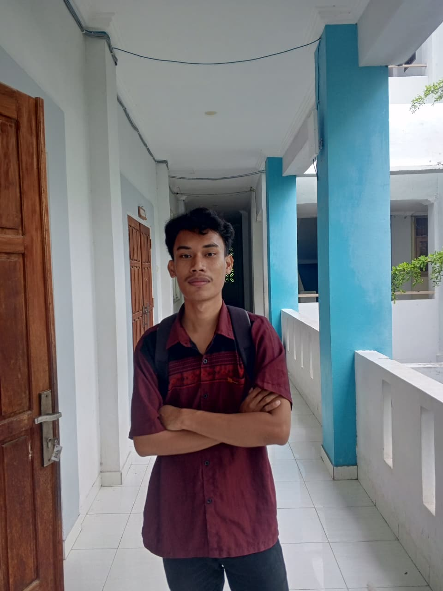
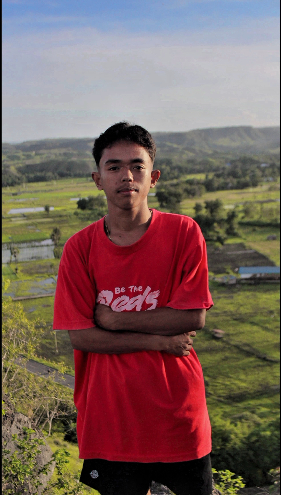
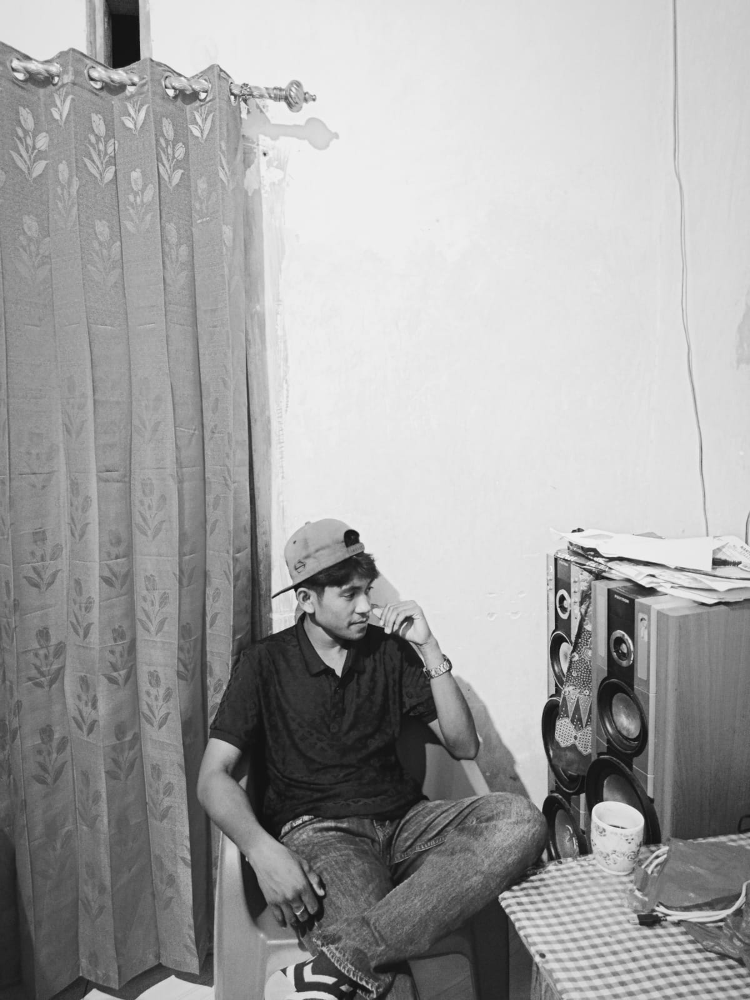
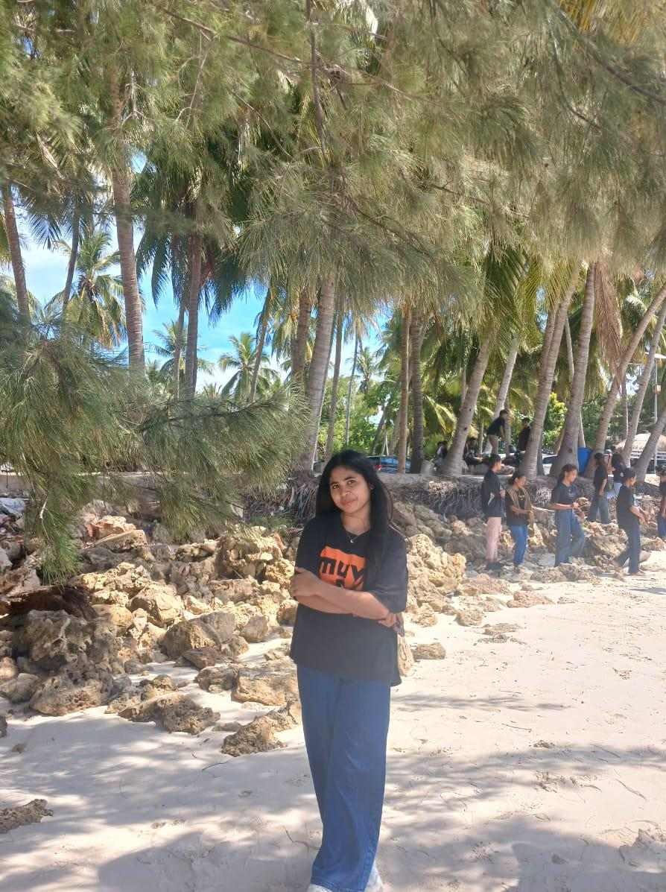
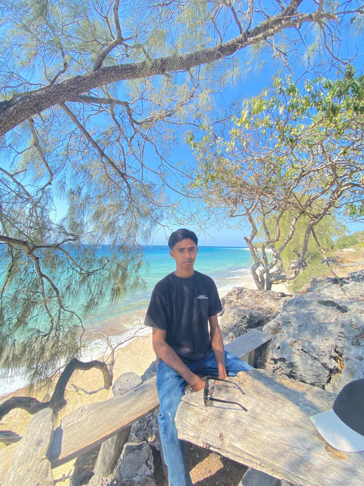

Pasar Ikan Waingapu dirancang berdasarkan hasil wawancara dan diskusi langsung dengan para penjual ikan serta nelayan di pesisir Waingapu. Kami melihat bahwa selama ini pemasaran hasil laut mereka masih sangat bergantung pada metode konvensional di pasar fisik, di mana jangkauan pembeli menjadi terbatas dan sering kali stok ikan segar tidak habis terjual dalam sehari.
Berangkat dari kondisi tersebut, platform ini hadir sebagai solusi wadah market online pertama khusus perikanan di Waingapu. Kami ingin membantu para pedagang dan nelayan lokal bermigrasi ke ekosistem digital, memberikan mereka lapak online yang bisa diakses oleh seluruh masyarakat Kota Waingapu kapan saja, sekaligus mempermudah konsumen dalam melacak keberadaan lokasi lapak mereka.
Menjadi platform marketplace perikanan online nomor satu di Waingapu yang menjembatani digitalisasi lapak pedagang dan nelayan lokal menuju pasar yang lebih luas dan modern.

Ketua
Nim : 2624056

Anggota
Nim : 2624045

Anggota
Nim : 2624068

Anggota
Nim : 2624074
Anggota
Nim : 2624053

Anggota
Nim : 2624052
Dukung dan berikan masukan untuk informasi pasar ikan kami